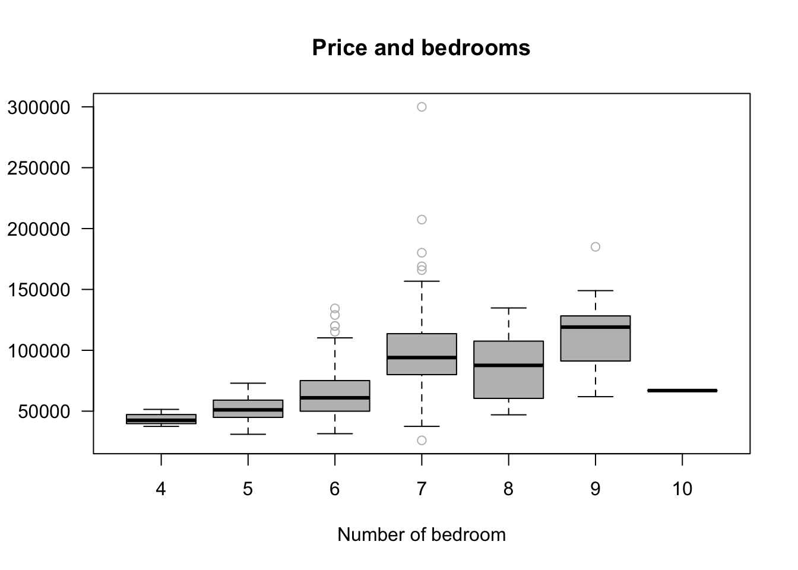
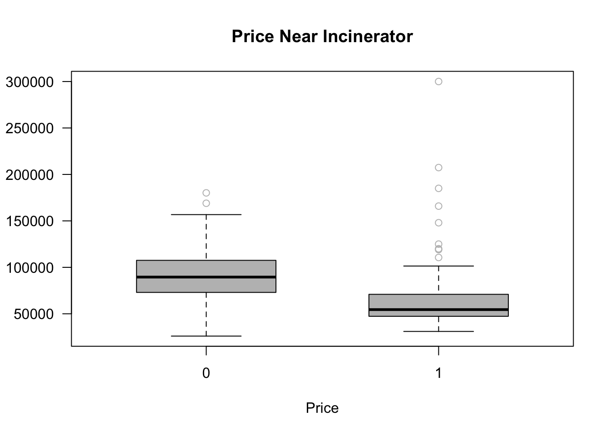
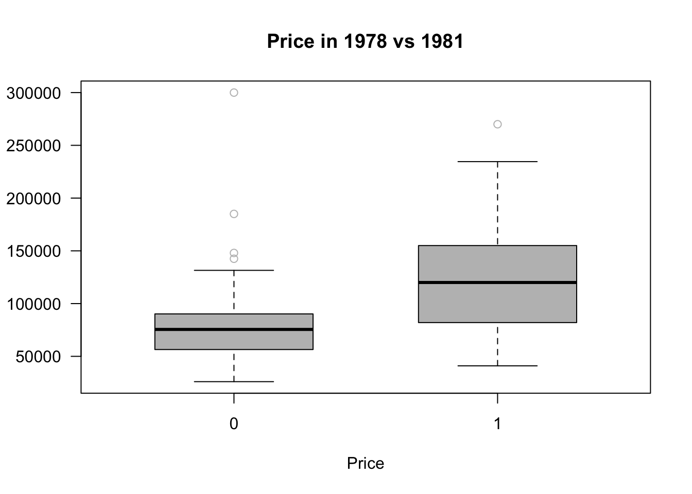
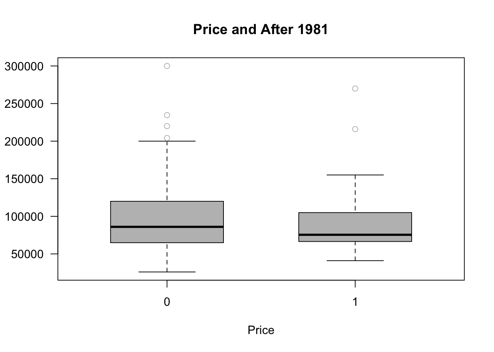

Show code
library(wooldridge)Warning: package 'wooldridge' was built under R version 4.3.3Show code
library(lmtest)
library(ggplot2)Warning: package 'ggplot2' was built under R version 4.3.3Show code
library(dplyr)There might be more questions on CV and DCE but for now we are switching gears and moving on the the Hedonic modeling.

Revealed Preferences method focuses on data that we find in the world versus asking people about how they behave. The hedonic method is an economic technique that estimates the value of environmental amenities by observing how they affect the price of market goods, most commonly housing. It works on the principle that a good’s price is a composite of its various characteristics. By analyzing the price differences of houses with different environmental features, such as proximity to a park or air quality, and using regression analysis, economists can infer the implicit value or “price” of these environmental factor.
So before we asked people what are you willing to pay or accept but now we are observing what they pay or accept in the market place. This process removes some of the biases we saw in the previous method that involved cognitive biases. But now we are concerned with other biases that occur with using only observed data in various markets which we discuss below:
In stated preference methods (like surveys or interviews), people describe what they say they would do in a certain situation. But their answers might not reflect what they’d actually do in real life.
Example: A tourist might say in a survey, “I care a lot about sustainability and would pay extra for an eco-friendly tour,” but in reality, they might book the cheapest option when the time comes.
Revealed preferences rely on actual behavior (e.g., trips they take, community lived in, choices made), so they avoid this disconnect.
People’s choices are observed, but the reasons behind them aren’t. You can’t always tell why someone made a particular choice. Maybe they chose an option because it was cheapest, or maybe because of convenience or habit. This brings up equity issues.
External factors (like advertising, social influence, availability) may drive choices, not just personal preferences.
Revealed preferences only capture behavior in the current market or context. If a product or experience doesn’t exist yet, revealed preference can’t tell you how people would respond to it.
The observed behavior might be influenced by the very thing you’re trying to measure (e.g., pricing strategies shaped by demand). This can complicate causal analysis.
library(wooldridge)Warning: package 'wooldridge' was built under R version 4.3.3library(lmtest)
library(ggplot2)Warning: package 'ggplot2' was built under R version 4.3.3library(dplyr)# Load the data from Ecdat package
data(kielmc, package = "wooldridge")
# Display the first three rows of data
head(kielmc, n = 5) year age agesq nbh cbd intst lintst price rooms area land baths dist
1 1978 48 2304 4 3000 1000 6.9078 60000 7 1660 4578 1 10700
2 1978 83 6889 4 4000 1000 6.9078 40000 6 2612 8370 2 11000
3 1978 58 3364 4 4000 1000 6.9078 34000 6 1144 5000 1 11500
4 1978 11 121 4 4000 1000 6.9078 63900 5 1136 10000 1 11900
5 1978 48 2304 4 4000 2000 7.6009 44000 5 1868 10000 1 12100
ldist wind lprice y81 larea lland y81ldist lintstsq nearinc
1 9.277999 3 11.00210 0 7.414573 8.429017 0 47.71770 1
2 9.305651 3 10.59663 0 7.867871 9.032409 0 47.71770 1
3 9.350102 3 10.43412 0 7.042286 8.517193 0 47.71770 1
4 9.384294 3 11.06507 0 7.035269 9.210340 0 47.71770 1
5 9.400961 3 10.69195 0 7.532624 9.210340 0 57.77368 1
y81nrinc rprice lrprice
1 0 60000 11.00210
2 0 40000 10.59663
3 0 34000 10.43412
4 0 63900 11.06507
5 0 44000 10.69195Kiel and McClain (1995)(Kiel and McClain 1995) studied how a new garbage incinerator affected house prices in North Andover, Massachusetts. They used many years of data and complex analysis. In our case, we’ll use just two years of data and simpler models, but the goal is the same.
Rumors about the incinerator started after 1978, and construction began in 1981. It was expected to start working shortly after construction began, but it actually opened in 1985. We’ll compare house prices from 1978 (before construction) and 1981 (when construction began).
Our hypothesis is that houses close to the incinerator would drop in value compared to those farther away.
For this example, a house is considered “near” the incinerator if it’s within three miles. (In another exercise, you’ll use the exact distance, like Kiel and McClain did.)
To measure the impact, we’ll look at house prices in terms of 1978 dollars, adjusting for inflation using the Boston housing price index. We’ll call this inflation-adjusted price rprice.

A dataframe containing 321 observations on 25 variables:
year: 1978 or 1981
age: age of house
agesq: age^2
nbh: neighborhood, 1-6
cbd: dist. to cent. bus. dstrct, ft.
intst: dist. to interstate, ft.
lintst: log(intst)
price: selling price
rooms: # rooms in house
area: square footage of house
land: square footage lot
baths: # bathrooms
dist: dist. from house to incin., ft.
ldist: log(dist)
wind: prc. time wind incin. to house
lprice: log(price)
y81: =1 if year == 1981
larea: log(area)
lland: log(land)
y81ldist: y81*ldist
lintstsq: lintst^2
nearinc: =1 if dist <= 15840
y81nrinc: y81*nearinc
rprice: price, 1978 dollars
lrprice: log(rprice)
boxplot(rprice~as.factor(rooms),las =1, col="grey", outcol ="grey",
ylab = "", xlab = "Number of bedroom",
main = "Price and bedrooms", horizontal =F,
data = kielmc)
boxplot(rprice~as.factor(nearinc),las =1, col="grey", outcol ="grey",
ylab = "", xlab = "Price",boxwex =0.6,
main = "Price Near Incinerator", horizontal =F,
data = kielmc)
boxplot(price~as.factor(y81),las =1, col="grey", outcol ="grey",
ylab = "", xlab = "Price", boxwex =0.6,
main = "Price in 1978 vs 1981", horizontal =F,
data = kielmc)
boxplot(price~as.factor(y81nrinc),las =1, col="grey", outcol ="grey",
ylab = "", xlab = "Price", boxwex =0.6,
main = "Price and After 1981", horizontal =F,
data = kielmc)
A very naive model would look at the change in price in the change in price over the two time periods
\[ \hat{rprice} = \beta_0 - \beta_1nearinc+u \]
To run this in r simply run the following equation
model0=lm(rprice~nearinc, data=subset(kielmc, y81==1 ))
summary(model0)
Call:
lm(formula = rprice ~ nearinc, data = subset(kielmc, y81 == 1))
Residuals:
Min 1Q Median 3Q Max
-60678 -19832 -2997 21139 136754
Coefficients:
Estimate Std. Error t value Pr(>|t|)
(Intercept) 101308 3093 32.754 < 2e-16 ***
nearinc -30688 5828 -5.266 5.14e-07 ***
---
Signif. codes: 0 '***' 0.001 '**' 0.01 '*' 0.05 '.' 0.1 ' ' 1
Residual standard error: 31240 on 140 degrees of freedom
Multiple R-squared: 0.1653, Adjusted R-squared: 0.1594
F-statistic: 27.73 on 1 and 140 DF, p-value: 5.139e-07This binary indicator is equal to one when the year is 1987 and the house is close the the incinerator:
\[ \hat{rprice} = 101,307.5 + 30,688.27nearinc+u \]
Since this is a simple regression with just one dummy variable, the intercept represents the average house price for homes not near the incinerator. The coefficient on the variable nearinc shows how much the average price changes for homes near the incinerator.
The result shows that, on average, homes near the incinerator sold for $30,688.27 less than homes farther away.
BUT it does not imply that the siting of the incinerator is causing the lower housing values. In fact if we look at the value at those houses before 1981 (like we see in the boxplots above) we obtain this
model1=lm(rprice~nearinc, data=subset(kielmc, y81==0 ))
summary(model1)
Call:
lm(formula = rprice ~ nearinc, data = subset(kielmc, y81 == 0))
Residuals:
Min 1Q Median 3Q Max
-56517 -16605 -3193 8683 236307
Coefficients:
Estimate Std. Error t value Pr(>|t|)
(Intercept) 82517 2654 31.094 < 2e-16 ***
nearinc -18824 4745 -3.968 0.000105 ***
---
Signif. codes: 0 '***' 0.001 '**' 0.01 '*' 0.05 '.' 0.1 ' ' 1
Residual standard error: 29430 on 177 degrees of freedom
Multiple R-squared: 0.08167, Adjusted R-squared: 0.07648
F-statistic: 15.74 on 1 and 177 DF, p-value: 0.0001054We can see that those close to the incinerator were less than the average value of a home not near the site. This comes back to the issue mentioned above in the biases in data. The area of where the incinerator was built appears to be in a poorer neighborhood based on housing prices.
** Note we will talk about equity issues in the environmental justice section. **
Difference-in-Difference modeling (DiffNDiff for short). Is often how economist will try to control for the issue presented above.
First we will both control for the estimation for being near the incinerator (nearinc), the year the data is collected (y81) and the difference of the price for houses near construction of the incinerator began construction in 1981 (y81nrinc).
model2=lm(rprice~y81+nearinc+y81nrinc, data=kielmc)
summary(model2)
Call:
lm(formula = rprice ~ y81 + nearinc + y81nrinc, data = kielmc)
Residuals:
Min 1Q Median 3Q Max
-60678 -17693 -3031 12483 236307
Coefficients:
Estimate Std. Error t value Pr(>|t|)
(Intercept) 82517 2727 30.260 < 2e-16 ***
y81 18790 4050 4.640 5.12e-06 ***
nearinc -18824 4875 -3.861 0.000137 ***
y81nrinc -11864 7457 -1.591 0.112595
---
Signif. codes: 0 '***' 0.001 '**' 0.01 '*' 0.05 '.' 0.1 ' ' 1
Residual standard error: 30240 on 317 degrees of freedom
Multiple R-squared: 0.1739, Adjusted R-squared: 0.1661
F-statistic: 22.25 on 3 and 317 DF, p-value: 4.224e-13From here we can see houses located near the incinerator were valued less in 1978 (-$18.8K). After construction in 1981, the variable estimated is not significant.
The models we just ran are missing a lot of information. Kiel and McClain (1995)(Kiel and McClain 1995) included housing features in their study for two main reasons:
The types of homes sold near the incinerator in 1981 might have been different from those sold in 1978. If so, it’s important to account for those differences.
Even if the homes didn’t change, including their characteristics helps reduce the amount of unexplained variation (error), which in turn makes the estimates more precise.
In column (3) of the results, they include the age of the houses (in a quadratic form). This improves the model by increasing the R-squared and reducing error. As a result, the effect of being near the incinerator in 1981 (y81·nearinc) becomes larger in size and more precisely estimated (lower standard error).
In column (4) we additionally control for distance to the interstate in feet (intst), land area in feet (land), house area in feet (area), number of rooms (rooms), and number of baths (baths).
Lastly, column (5) uses lrprice: log(rprice) so that we can interpret the entire equation as percentage changes in order to get the effect and address adjusting for inflation.
library(stargazer)Warning: package 'stargazer' was built under R version 4.3.3
Please cite as: Hlavac, Marek (2022). stargazer: Well-Formatted Regression and Summary Statistics Tables. R package version 5.2.3. https://CRAN.R-project.org/package=stargazer # Run the models
model3 <- lm(rprice ~ y81 + nearinc + y81nrinc + age + agesq, data = kielmc)
model4 <- lm(rprice ~ y81 + nearinc + y81nrinc + age + agesq + intst + land + area + rooms + baths, data = kielmc)
model5 <- lm(lrprice ~ y81 + nearinc + y81nrinc + age + agesq + intst + land + area + rooms + baths, data = kielmc)
# Create the table
stargazer(model0,model1, model2, model3, model4,model5,type = "text", title = "Regression Results", column.labels = c("Simple81","Simple78", "DiffNDiff", "Age", "Full", "LogPrice"))
Regression Results
=====================================================================================================================================================================
Dependent variable:
-------------------------------------------------------------------------------------------------------------------------------------------------
rprice lrprice
Simple81 Simple78 DiffNDiff Age Full LogPrice
(1) (2) (3) (4) (5) (6)
---------------------------------------------------------------------------------------------------------------------------------------------------------------------
y81 18,790.290*** 21,321.040*** 13,928.480*** 0.139***
(4,050.065) (3,443.631) (2,798.747) (0.029)
nearinc -30,688.270*** -18,824.370*** -18,824.370*** 9,397.936* 3,780.337 -0.035
(5,827.709) (4,744.594) (4,875.322) (4,812.222) (4,453.415) (0.046)
y81nrinc -11,863.900 -21,920.270*** -14,177.930*** -0.093*
(7,456.646) (6,359.745) (4,987.267) (0.052)
age -1,494.424*** -739.451*** -0.009***
(131.860) (131.127) (0.001)
agesq 8.691*** 3.453*** 0.00004***
(0.848) (0.813) (0.00001)
intst -0.539*** -0.00000*
(0.196) (0.00000)
land 0.141*** 0.00000***
(0.031) (0.00000)
area 18.086*** 0.0002***
(2.306) (0.00002)
rooms 3,304.227** 0.053***
(1,661.248) (0.017)
baths 6,977.317*** 0.103***
(2,581.321) (0.027)
Constant 101,307.500*** 82,517.230*** 82,517.230*** 89,116.540*** 13,807.670 10.371***
(3,093.027) (2,653.790) (2,726.910) (2,406.051) (11,166.590) (0.117)
---------------------------------------------------------------------------------------------------------------------------------------------------------------------
Observations 142 179 321 321 321 321
R2 0.165 0.082 0.174 0.414 0.660 0.730
Adjusted R2 0.159 0.076 0.166 0.405 0.649 0.721
Residual Std. Error 31,238.040 (df = 140) 29,431.960 (df = 177) 30,242.900 (df = 317) 25,543.290 (df = 315) 19,619.020 (df = 310) 0.205 (df = 310)
F Statistic 27.730*** (df = 1; 140) 15.741*** (df = 1; 177) 22.251*** (df = 3; 317) 44.591*** (df = 5; 315) 60.189*** (df = 10; 310) 83.880*** (df = 10; 310)
=====================================================================================================================================================================
Note: *p<0.1; **p<0.05; ***p<0.01What we can see in the above regressions, at first we see in columns 1-3 the location of the house to the incinerator is highly significant. The incinerator construction location was built in a poorer neighborhood.
Once we control for the housing characteristics (columns 4-6), we find that the construction of the incinerator decreased housing prices by 14 to 21K or more intuitively housing prices dropped by 9.3%.
This all suggest that undesirable facilities known to impact many aspects of the quality of environment greatly impacts the overall assets of the people chosen to bear the change!!